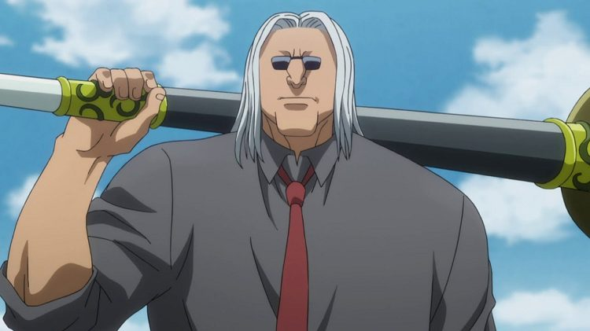

Deep Purple
A Conjurer's answer to being outnumbered: smoke, given orders. The user exhales soldiers, tireless, obedient, utterly disposable, that fight, scout, carry, and screen while the conjurer hides somewhere in the fog. Deep Purple doesn't win duels; it wins battlefields, one expendable private at a time. The pipe is just for show. Mostly.

Deep Purple
"A soldier's job is to be spent." Conjuration and Manipulation, in that order, the smoke is shaped, then told what to do.
Feature map
Level-by-level features
Field notes. Subject: an army, exhaled. I have watched this technique and the word that keeps returning is muster, not summoning, not conjuring: a muster, with all the discipline the word implies. Three truths govern the parade. First, the army is breathed out: 2 CE and an exhale puts PB smoke soldiers in unoccupied spaces within sixty feet, acting on your initiative on verbal orders alone. Second, the general is indistinguishable from his men: he dissolves into smoke and re-forms beside any soldier within a hundred and twenty feet, perceives through their eyes, and can wear one’s face as his own. Third, fog is logistics, not cover: the soldiers grapple, carry the wounded, hold ropes, run ten-mile couriers, filter poison from a drowning man’s lungs. Hence the maxim: find the general, he is the one who looks like every other soldier.
Smoke, Obey
Action · 2 CE · Conjure PB smoke soldiers (min 2) in unoccupied spaces within 60 ft · They act on your initiative immediately after you and obey verbal orders freely · Melee attacks with your CE ability modifier; 1d6 + CE modifier bludgeoning on hit.
The muster begins with a breath. An army that costs a breath and answers to a word: this is the technique’s whole economy.
They don't need to win. They need to be there.
Eyes in the Fog
Bonus action · 1 CE · Designate a soldier within 120 ft: perceive through it (see and hear) while your own body is blinded and deafened until dismissed · The soldier still fights.
One soldier becomes your eyes. The general doesn’t need to be at the front. The front can be anywhere the fog is.
The Ranks Swell
Passive · Maintain up to 5 × level soldiers; each conjuring still costs 2 CE per PB-sized batch · Screen: reaction, 1 CE when targeted by an attack you can see — a soldier within 5 ft interposes and dissipates, taking the attack instead.
The muster grows. The breath is the same; the lungs are larger.
Screen. That's what they're for.
Hands of Smoke
Passive · Soldiers can grapple/shove (using your CE save DC), carry (two soldiers move a Medium or smaller creature 20 ft per round), and perform simple tasks: open doors, drag the wounded, hold ropes.
Your soldiers learn hands, not just fists. An army is logistics wearing a uniform, and this one now does the army’s real work.
The General Vanishes
Bonus action · 3 CE · Dissolve into smoke and re-form in an unoccupied space adjacent to a soldier within 120 ft · Bring only what you wear and carry.
Anyone watching sees only the fog shift. The general’s oldest trick, be everywhere the army is, and nowhere in particular. Find the general. He's the one that looks like every other soldier.
The Fog Itself
Once per long rest · Bonus action · For 1 minute: become living smoke — attacks and single-target effects can't target you, pass through 1-inch gaps, resistance to nonmagical bludgeoning/piercing/slashing · Can't attack or spend CE except through your soldiers · End early as a bonus action.
The general abdicates the battlefield to his men, and becomes untouchable in the exchange. There is no general anymore. There's weather.
Maximum and Domain.
Capstone material
Maximum: The Smoking Parade
Action · 5 CE · For 1 minute: conjure soldiers equal to 10 × your level in unoccupied spaces within 120 ft at no further cost · At the start of each of your turns: every hostile within 10 ft of at least three of your soldiers: 6d8 bludgeoning (Dex save vs your CE save DC for half) · When it ends: soldiers dissipate, you gain 1 level of exhaustion.
The Maximum is the whole army at once. A parade is not a maneuver. It is an announcement. The pipe burns the lungs that feed it. The whole parade, all at once, and damn the cost.
Domain Expansion: The Barracks of Fog
Full turn · 20 CE · 18th level · Clash 800, burnout 5 rounds, duration 2 min, radius 120 ft · Sure-hit: Nowhere to Stand — at the start of each of your turns, every hostile inside takes 4d8 bludgeoning (Dex save vs your CE save DC for half) · All creatures except you are blinded beyond 10 ft · Soldiers in the domain don't count against your maintained total.
Fog rolls in from every direction at once, thick and grey, until the world is reduced to ten feet of visibility and the sound of marching. Shapes move in the murk, countless, disciplined, the tramp of boots that never quite arrives. The fog smells of iron and wet wool, and it does not lift.
The sure-hit Domain, and the sure-hit is the muster. The Barracks of Fog does not summon an army into a Domain, the Domain is the barracks, and the muster never ends inside it.
Nowhere to Stand. The domain is thick with your soldiers — they are already everywhere. You brought an army to a duel.
Five feats, drilled.
Deep Purple teaches five feats, five drills your smoke has rehearsed until they're reflex. Each is optional, and you must meet its listed prerequisite before taking it.
False General
Shape one soldier into your exact likeness, face, voice, mannerisms. It mimics you well enough that no one can distinguish it from you without close inspection (an Investigation check against your CE save DC). It still dissipates when struck. The decoy’s only armor is being believed.
Dead Drop
Detail one soldier as a courier: it can carry a written message or a small object up to 10 miles over 24 hours, traveling as drifting smoke. It cannot be intercepted except by effects that specifically target smoke, fog, or aura. The army’s postal service runs on weather.
Secondhand Lungs
Shape a soldier into a breathing mask fitted over a willing creature's face. For 1 hour, that creature is immune to inhaled poisons and gases and can breathe underwater — the soldier filters everything. The fog that chokes armies can also keep one man alive. The mask dissipates if struck.
Fog of War
As an action, spend 2 CE: your soldiers exhale a 60-foot cube of heavy smoke that lasts 1 minute. The area is heavily obscured, and not even magical sight can pierce it. A strong wind disperses it early. The fog of war, issued on demand.
The Last Soldier
Once per long rest, when you drop to 0 hit points, you may dissolve instead of falling: you re-form adjacent to your most distant soldier within 300 feet at 1 hit point. The fog always keeps one private in reserve. The general’s last order is to himself: survive.
Edge cases and shared systems.
Campaign canon notes